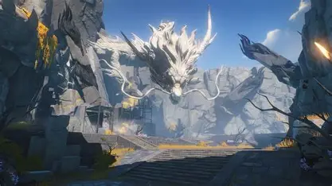
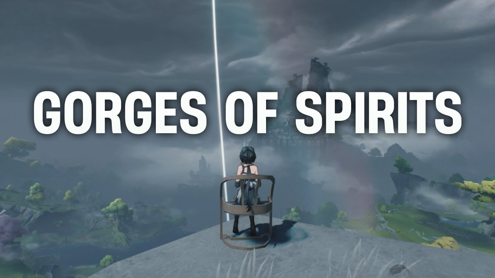

is the beginning of our story. Rover terbangun di Gorges of Spirits tanpa ingatan tentang siapa dirinya. Ia ditemukan oleh Yangyang dan Chixia. Tidak lama kemudian mereka diserang Crownless, Tacet Discord yang sangat kuat. Hal aneh terjadi: Rover mampu menyerap frekuensi Crownless dan menjadikannya Echo. Kemampuan ini tidak normal, bahkan bagi seorang Resonator. Setelah itu Rover bersama Yangyang dan Chixia pergi menuju Jinzhou


Sesampainya di Jinzhou, Rover mendapat undangan dari Jinhsi, Magistrate Jinzhou. Masalahnya, Jinhsi justru sedang tidak berada di City Hall. Rover kemudian bertemu Sanhua, pengawal Jinhsi. Sanhua memberikan beberapa benda misterius yang ditinggalkan Jinhsi sebagai petunjuk. Jinhsi tampaknya sudah mengetahui kedatangan Rover dan sengaja mengatur semuanya dari belakang layar. Rover kemudian diperiksa oleh Baizhi dan Mortefi. Di sinilah muncul petunjuk penting: ketika Rover menjalani simulasi menggunakan teknologi yang berhubungan dengan Sonoro Sphere, muncul sebuah Tacet Discord misterius yang menyerang Rover. Baizhi menyadari bahwa ada sesuatu dalam frekuensi Rover yang tidak biasa. Sementara itu, benda-benda pemberian Jinhsi ternyata merupakan semacam puzzle yang mengarahkan Rover menuju informasi mengenai masa lalu Jinzhou dan hubungan Rover dengan peristiwa lama.